Rome Vs The Matrix
I would like to tell you a story. This is a story of how we the British people, and we the planet, got here and more importantly where we should go next. It is still a work in progress. If you are of a like mind, please help me to improve it. [1]
Dogglerland
After the last Ice Age, Britain was certainly a part of Europe, the Thames and the Rhine met and Woolly Mammoths and later people walked across to Britain.
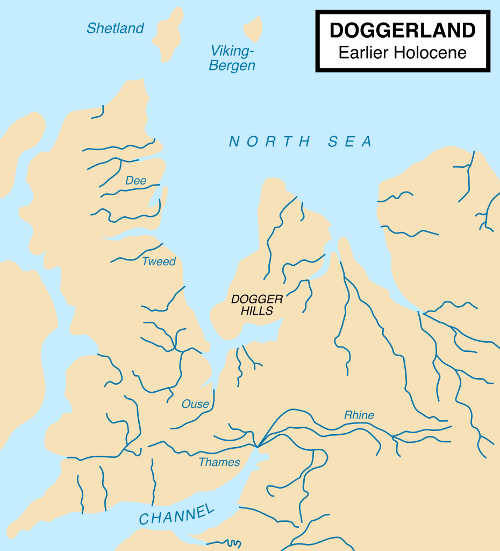However, God decided out of wisdom or for a joke, that Britain should be an island and smashed the land bridge with the Hammer of the Waters [2].
Of course, throughout history, idealists have been trying to glue Britain back onto Europe, without much success.
However, this unavoidable geological and geographical fact remained and still remains, and it gave us a very different history to the continental peoples of Europe. I think it also gives us a very different future.
Rome DOS
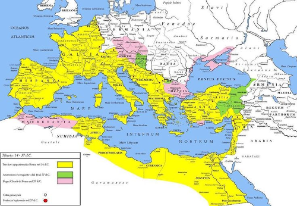Julius Caesar’s made expeditions to ancient Britain in 55 and 54 BC, it was the beginning of a pattern. The Romans could enter Britain and conqueror territory, but they could not hold it.
Whether is was Boudica, the Iceni queen who burned down the Roman settlements at modern day Colchester, London and St Albans; the inability to make progress in the North, modern day Scotland, Wales or Cornwall; or countless other defeats; the Romans never achieved a stable position in Britain.
Roman Britain existed within its urban colonies but despite a massive investment in infrastructure, such as the famous road network, conquering Britain was never a serious enough priority to divert the required military forces to subdue the people of Britain once and for all.
Roman officials and retired veteran troops settled in Britain had a tendency to go native and side with the locals over Rome, not least for survival, intermarriage with local tribes brought more security than the Roman state, which was more annoyed than responsive when the frequent requests for rescue came. After a few hundred years of half-hearted efforts of colonisation, Rome stopped answering altogether.
Charlemagne and Rome 3.11
However, in Europe, despite the collapse of the Romans, the Byzantine and Frankish Kings were trying to recreate and hold the Roman Empire, Charlemagne being the most famous, he conquered a good part most of Western Europe.
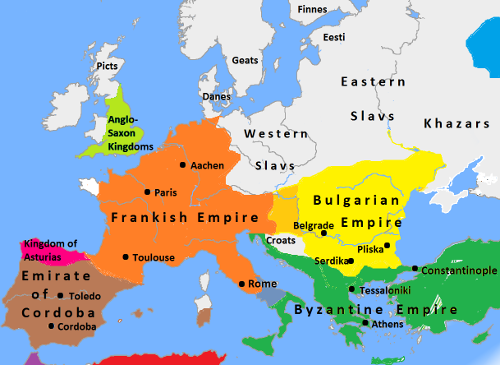For those on the continent, they have a 2000 year process of recreating the Roman Empire. However, we were barely in it to start with, and haven’t joined since.
While Charlemagne was winning battle after battle, back in Britain, something very different was happening. As the Romans had faded out, the Saxons faded in, it wasn’t very long before the Mercian Supremacy united England under the Saxon Kings and their capital of Tamworth.
Normandy
William I, also known as William the Conqueror, the first king on the back of the space-limited 1 foot rulers traditionally given to British schoolchildren, was cousin and in his own mind at least, heir, to the previous king Edward the Confessor.
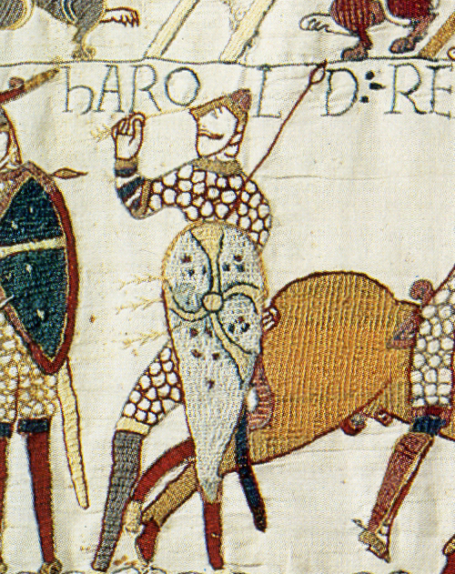With the arrow through King Harold’s eye, the Anglo-Saxon era of Britain had ended and the Norman age had begun.
Despite Northern France being their ancestral homeland, the Norman Kings and their Tudor descendents failed to hold together England and France, losing Normandy and the rest of their homelands to the Franks.
They had more luck in the westerly direction, conquering the various little kingdoms in Ireland by war and marriage, while Henry VIII managed to create a peaceful union with Wales. However, all attempts to secure a legal heir either by legitimising his son Henry FitzRoy or divorcing required permission from the Pope.
English Independence from Rome 95
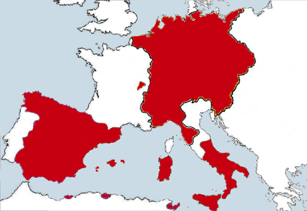The Pope had bigger problems than pleasing the English (and Welsh and Irish) King, Emperor Charles V was once again building a united Europe. Grumbles about papal rule and (in practice) subservience to the Holy Roman Empire had been bubbling for many years in parliament over a range of issues, but the international marriages of the King had always meant the monarchy was a limit to how far parliament could act.
Now with the King on the side, the Acts of Supremacy was could be passed, meaning the King and the secular parliament would now rule the Kingdom, the role of the Church was confined to moral matters alone, and England was no longer seen as a minor partner or dependency of the Holy Roman Empire.
This also enabled union with protestant Scotland, and James VI of Scotland became James I of England. Despite the movie of the evil English killing poor blue painted Mel Gibson and the moans of today’s Scottish nationalists, it was actually the Scottish that (peacefully) conquered England.
The United Kingdom was now a confident and powerful country. Freedom of thought led to the industrial revolution, which we will come back to later.
Catholic Europe and its supporters did not take this lying down, England was still a valuable prize to add to a European empire. The Spanish Armada was the most famous failed attempt at an invasion, and the Gunpowder Plot tried to blow up parliament with James I inside.
Two last attempts at UK-European integration
A more consensual(ish) attempt of European integration was when parliament invited William of Orange to become the King William III and so he did. For a brief period it seemed like the United Kingdom and the Netherlands would become one country. However, William was childless when he fell of his horse and died, and each Kingdom had different rules over the succession, and that was that.
Next in line was his sister in law, Queen Anne, the last truly English monarch. Under her rule there was a major humanitarian crisis on the continent. King Louis of France decided to commit genocide against the Huguenot people and wipe them out in a series of massacres, half a million left France in a giant exodus.
Queen Anne opened Britain’s borders and 50,000 Huguenots moved here. Queen Anne’s new immigration policy was simple, anyone who turned up and pledged allegiance to the Queen was immediately part of the British population.
The open border policy lasted for hundreds of years. The barriers were only put up fully in the late 20th Century, when we were already in the European Union.
Anyway, like William, Queen Anne also died childless. What happened next is quite interesting. Parliament chose the next King from a list of potentially suitable Princes and Princesses. They settled on George of Hanover, the 58th in line to the throne and non-English speaking.
We were now in a union with a mid-level German principality, but like all our other European alliances, it broke down and it eventually the Kingdom of Hanover became part of the German Empire.
Britain in the World

By now Britain had lost interest in European affairs, we were part of a global Empire on which the sun never set. Lots of terrible evil things happened, which everyone talks about but also some good things, which people don’t talk so much about.
On a purely economic level, the Empire was a giant mistake. What started as an attempt to get a set of sustainable safe ports ended up covering a quarter of the world. It was the industrial firms of the UK that had to subsidise the infrastructure of Empire building, and as other countries got their industrial revolution, the sums no longer added up.
If we had just defended these ports, and given countries their independence quicker, would they have been more free? Or would an even less benign European power have swooped in and taken them?
Anyway, the Empire and all its good and evil and idiosyncrasies happened. The Commonwealth is there? Why do we ignore it?
We discovered medical treatments and we started Canada, Australia and New Zealand. From a small patchwork of feudal kingdoms, we united India - against us of course - but now it is one of the greatest countries in the world.
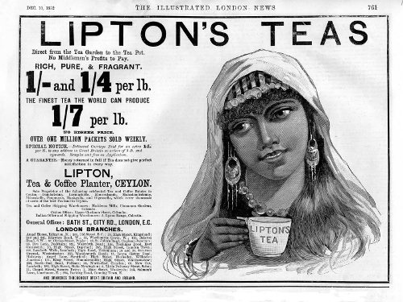Obviously we cannot take credit for India’s hard work but we did leave them the world’s largest railway, Westminster-style parliamentary democracy and the English language which they are using brilliantly to trade internationally, they are the winners.
The Commonwealth is the growing part of the world, the 21st century is their century. Why shut them out just to stay in a club of losers? Lets get stuck in and help the Commonwealth countries develop. The old masters can become the servants, lets not be too proud and have some humility.
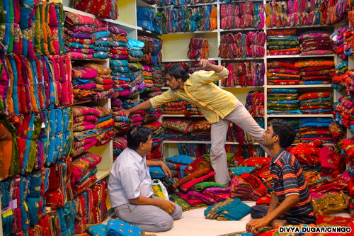The Empire was not a one way street, we learned a lot from the Commonwealth peoples. We got tea, carpets, colourful patterns and new artistic and musical forms, new philosophies and our national obsession with curry.
By being exposed to the world, the values of the British people started to change. We realised that people were not so different. We went into the world as gold-hungry pirates but started coming back with new values.
The Society for Effecting the Abolition of the Slave Trade started from those who had gone out into the Empire and not found blood thirsty savages, but instead found friends and lovers, decent human beings. To make sense of it they went back to the New Testament notion that God made all men are equal and all men are our brothers.
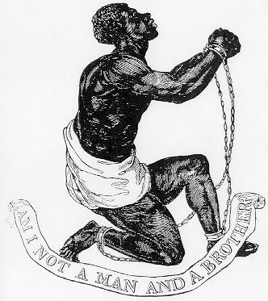This came to a head when the great Christian leader and parliamentarian William Wilberforce led the social and parliamentary campaign to abolish slavery.
Since everyone is our brother and sister, all men should be made free of slavery, oppression and poverty and it is our responsibility as human beings to make it happen, to bring freedom to the world. Not wait for the oppressed to take back their own freedom, it is everyone’s job, especially the advanced country that is Britain.
This sounds simple and obvious now, but in the late 1700s this was a radical idea, the first time it had been exposed.
It is an unavoidable historical fact that this was a British (and Dutch) movement. During this period, Germany and much of continental culture was going in a totally opposite direction, building the foundations of fascism.
I don’t say this for nationalistic reasons but to point out that human rights did not start because of the EU. We were already starting to take a first step down this path three hundred years ago.
Maybe this is why God brought the hammer down on Doggerland, to give us a more global perspective. Once you have built a boat to sail to Europe, you can use that same boat to explore the world, then you find that everyone is a human being.
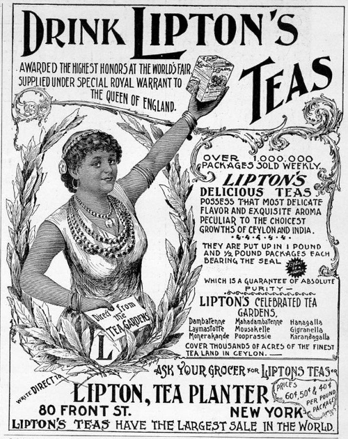The last patriot
American Independence is today framed as a fight for freedom, Mel Gibson being killed (again) by the evil English, and to a large extent that is accurate. However, what they don’t like to mention is that one of the factors driving American Independence was a fear among American slave owners that Britain was going wobbly on slavery. They were right, we were.
What is also true is that the newly independent America went backwards on the rights of Black people and native Americans for the first 50 to 75 years.
One thing that the British navy based in its territory in Canada liked to do was to go down to plantations in the American south and rescue slaves, many thousands of whom settled in Canada and in the UK.
We should have done more. We should have freed every last slave, even if it meant abolishing the US government and killing Mel Gibson a third time. All people are equal. Those who are oppressed we must help.
All Britons got free healthcare in 1948. If you are black in America today you are three times as likely to not have decent health insurance than a white person. America was 75 years behind us in 1800 and it is still 75 years behind now.
Therefore, this is not the time to import the US health care system via TTIP. Sadly, the EU has it on the cards and we cannot escape it while being a member. If you or your family has what the Americans call ‘pre-existing condition’, then expect significantly worse and more expensive healthcare than we have now.
I actually love Americans and American culture. I hate their war mongering governments. I love San Francisco and hate Washington DC.
We should have free trade with America, but at the moment the American government is only offering take or it leave it terms. I think we should leave it.
I also dislike the idea that to criticise the American government is a problem. I don’t want to live there. I don’t want UK to become America either. I don’t want their ideas about private healthcare, GMO foods, Fracking or a culture based on the ownership of guns.
Rome XP: World War I
When Napoleon tried to create a united Gallic Europe, we were going to lose our essential pit stop of Malta and possibly lose access through Mediterranean, as well as our allies being attacked.
So we popped over the channel and put Napoleon is his box but lost interest afterwards. As we saw above, we long ago lost interest in holding possessions on the mainland of the continent.
So after Napoleon, it was still France that was seen as the potential trouble maker. In general, in the 19th Century, Relations between Britain and Germany were very good. Back then Britain still believed it was a Germanic people, the Anglo-Saxons, and we had our recently imported German kings. All that was deliberately and rapidly washed away in the build up to World War II so it is quite hard to comprehend now.
Our main priority was always free trade routes, as long as we could go past Europe through the Mediterranean, we didn’t want to interfere in the continent and they didn’t want to interfere in our empire, we just wanted happy neighbours.
However, while we were sailing off around the world, causing chaos, building railways, drinking gin and rethinking what it was to be British and human. The Europeans were still trying to make the Roman empire. They couldn’t agree if it would be a French empire or a German one but now they had better guns which spiralled into World War I.
The Austrian Franz Ferdinand was assassinated by Serbia. The UK tried to make France and Germany just get along. They didn’t listen. Politicians and generals on both sides decided this was the perfect excuse to defeat the other and become the new Roman empire.
When German and France started fighting, we still tried to calm it all down. The problem was that Britain a had given security guarantee to Belgium in 1839, not sure the UK even remembered but the Belgians did. So when on the 4th August 1914, Germany troops marched through Belgium to attack France, the guarantee was triggered.
The British public was totally confused, weren’t we a Germanic people? Isn’t France the country of Napoleon? Aren’t France the bad guys? Why do we even care about Belgium anyway?
In the confusion of complex European politics, to the government honouring the deal with Belgium seemed like a precise and specific aim that didn’t require a master plan for the continent.
The government decided it could clear out Belgium and be back home in a week, back home in time for Christmas, back home in time for New year...
We went into World War I as a naval power with little recent experience of fighting warfare on land against an equally advanced enemy. Sea battles against an inferior foe last a day or two, maybe a couple of weeks.
The War dragged on for 4 long years and we lost a million of our best and brightest people for no gain whatsoever. Progressive social changes started going backwards. Long promised reforms and freedoms promised to Ireland were delayed by the war and we lost them. We bankrupted ourselves and started to lose the whole Empire. We even killed Mel Gibson again at the incompetently run campaign at Gallipoli.
France continued Empire building in the Treaty of Versailles, trying to guarantee a permanent superiority over Germany. The UK delegation, “the Heavenly Twins”, bankers who were brought in as “worthy finance experts”, despite advice from Keynes in the Treasury to prioritise making sure post-war Germany was viable and don’t worry about making money, decided it wanted a huge pile of money out of Germany too.
If only people today would learn to ignore bankers and ‘worthy’ figures of high finance and listen to Keynes, maybe we would not have the financial crash, the Greece crisis, or in fact World War II.
Rome 7 - World War II
Between the wars, America had started to make aggressive moves against Britain and its empire, so wasn’t even looking at Nazi Germany. If any threat loomed it was from those evil red communists in Russia.
Britain likewise hardly noticed, struggling to deal with colonial demands for independence.
When the first moves in Hitler’s game started, many assumed it was just a corrective to the Treaty of Versailles. Maybe partly it was, but Hitler had got the taste of momentum and was never going to stop.
Hitler, like those before, wanted his own version of a united Europe. Mussolini even used the Roman symbolism directly.
Hitler called Charles V’s Holy Roman Empire (see above) the First Reich. Bismarck’s Prussian Empire was the Second Reich, and Hitler’s own rise to power was the Third Reich, the third German attempt at a pan-European state (ignoring all the other attempts).
This time, it really could not be ignored. Hitler’s grand vision of a united Europe left no room for anyone else, whether internal minorities such as the Jews, or external powers such as Britain.
Germany was the master race, a white Europe united under one government with white troops wearing even whiter shirts.
Britain stood alone against Hitler!
Erm well no. Not really at all.
Forces that the UK fielded were a multi-racial bunch. As well as my Granddad and other British residents and thousands of Australians and Canadians, we had 2.5 million Indian volunteers, we had a Burma Division, a Fiji Infantry Regiment, the Royal Malay Regiment, the Arab Legion and Africa sent six whole divisions of black African volunteers. It goes on and on.
In the following image, comrades look on as a West African soldier is treated by doctors. Many thousand Africans and a million Indians died for our freedom.
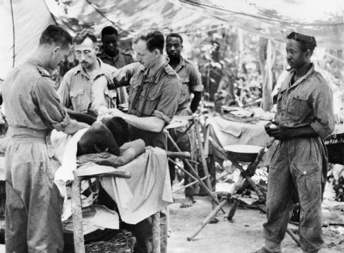Despite all the injustices, problems, disagreements, desires for independence, etc, when we needed them, the Commonwealth was there for us. We wouldn’t even have a UK if it was not for them.
Oh yeah and even the Americans came. Eventually. Thanks. We love you. God bless America.
The multi-racial international British Commonwealth and America beat the white European master race and their all-white allies because all people are equal, all are valid, and all have something to contribute. You don’t have to live in Europe to be valuable.
In 1972, the UK was still not yet in the EU so our borders will still largely open to the world, as they had been since the days of Queen Anne.
Independent Uganda decided to expel all 50,000 of its citizens from Indian origin. 27,200 of them settled in the UK. It wasn’t all easy, there was a lot of racism from the right and support from the real socialists, but they thrived here and like the Huguenots, they became an essential part of the UK population.
The Socialist worker at the time tried to explain to the British people they had nothing to fear:
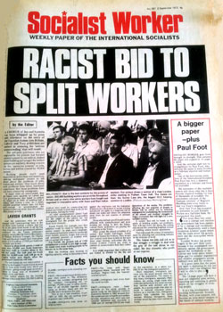It is the racist financial elite and the mainstream media that tries to people of Britain against our cousins in the Commonwealth, and they still do it today.
The Guardian is nice, it has a handy app that means I can read it on the toilet, but it is not a left-wing paper, it is a right-wing mainstream media paper like the rest. This is the age of the Internet, diversify your information.
Rome 10 - The European Union
A factor in the wars between France and Germany is that the bordering areas are rich in natural resources. Sharing them helps to prevent arguments which makes peace. In this context the post-war European Coal and Steel Community makes a lot of sense. But Britain has never dug the Ruhr. It doesn’t mean anything to us.
Brussels is the mid-point between France and Germany, good location for them but it doesn’t mean anything to UK except the site of some stupid unnecessary wars between France and Germany where our grandparents and great-grandparents suffered. We did not need to join the EU to stop us conquering France or Belgium. UK has been finished with that since 1534.
So the fact the symbolism of the EU means more to France and Germany and means little to UK, doesn’t come us much surprise.
The EU used to be like a benign attempt at a Roman Empire, but it has become increasingly hostile to its own people, see what happened in Greece, and it is increasingly out of step with British values, go read about TTIP. Read about the Viking Line labour dispute. The EU has long ceased to be a progressive force, if it ever was.
It has a centralised, proprietary setup where the only people that can influence decisions are yesterday’s multinational corporations. It then puts a phoney parliament on top as a democratic fig leaf. The European ‘Parliament’ has two fancy state of the art buildings that it shuttles between. What it cannot do is make any new laws or repeal any old ones. Only the unelected Commission can write new laws, as for repealing laws, there is not a system for that. What a joke!
In 1999, I was an undergraduate with a giant EU flag on the wall of my dorm. I read all the propaganda, went on all the trips. I wrote essays saying while the EU was currently undemocratic, bad for the environment, and bad for the developing world, it would be fixed soon. It wasn’t. All we had to do was co-operate and wait and it will reform. It didn’t.
I even waited in the Snow in 2002 outside the Bank of Finland to get some of the first Euros. What a mistake the Euro was, it has bankrupted Greece and left many of the young people of Europe without a hope of jobs.
Those who funded the Remain campaign are the same people that caused the financial crisis of 2008: Goldman Sachs, Merrill Lynch and J.P. Morgan. They are not our friends or allies.

Much is made to dismiss left arguments for exit because Nigel Farage wants exit. Whatever one may think of him, he has never held power to hurt anyone and never will have power. Meanwhile, Remain’s George Osborne has had power and used it to take money from disabled people and give it to the same billionaires that are backing remain.
Then we come to Remain’s Tony Blair.
Britain in recent history didn’t start wars or kill people, yay! We had finally learned from our past mistakes. That is until the lying warmonger Tony Blair came along.
My own faith in Britain took a massive nosedive then and probably hasn’t recovered, maybe it never will, it is now the cyber-internationale or nothing.
Blair is responsible for choosing to start a war which has killed up to a million people. I will not stand with him and I will probably not agree with him on anything. When you take the same side as Blair, I see you as a right-wing Blairite, I do have to admit that. You have to to, you are one. It is better to be honest that you are right of me.
I am not a European. I am British and I am a human and like Wilberforce, I believe being a human is the more important fact.
I don’t see the need for any layers in between.
I believe that a Kenyan or an Indian or an Australian or a native American is as equal to a Bulgarian or a Hungarian.
The EU means that someone 1000 miles east of me has equal rights to me in the UK but someone 1000 miles south of me has none. I find that completely arbitrary.
The real truth is that European countries are all white, that is the only unifying factor. That is a racist way to order the world.
There is a lot of middle-class European nationalism, as if it is an acceptable form of nationalism, and an acceptable form of racism. It is not. To me it just seems like the last 2000 years of re-making the Roman Empire.
Moving on from being a little Englander is not be a little European, it is to be a citizen of the whole world.
There is a lot of middle-class sneering at the out campaign, that it is full of racists and not the right kind of educated people in the Remain campaign. A racist with a degree is still a racist. The remain campaign is equally racist. Just one step zoomed out. They are still putting up trade and immigration barriers to everyone who is not in the arbitrary group of 28 majority-white countries that is the EU.
If you don’t have a degree, if you are a normal working person sick of the sneering; I have three degrees, you can imagine one of them is yours. They don’t mean anything here. Your voice is equal to the most loftiest expert. Stick to your beliefs. RMT, ASLEF, BFAWU and other Trade Unions supporting Leave know as much, if not more, than the forces of neo-liberal capitalism.
The fact is the Europeans don’t have the Commonwealth history and the relatively happy race relations we have in the UK. We have a different history. That is fine. Let them get on with their Rome building.
Britain can leave and rejoin our Commonwealth and the rest of the world. If Rome 10 still wants to trade with us afterwards, fine, if not fine. We have a massive balance of trade deficit with them anyway so not having a trade deal would both hurt and help us. For Rome 10, not having a trade deal would only hurt them.
Why do you think we have a massive balance of trade deficit with the EU in the first place?
If you remember, the Commonwealth is a group of ccountries whose citizens had stood up and died for us in the war. Before we joined the EU, we put had trade barriers with to the Commonwealth. We had a complementary relationship, we sold them cars and machines and they sold us food, carpets, clothes, tea and so on.
We used to eat cheap food grown without chemicals in the hot sun in Australia, Africa and India. Now we eat expensive pesticide covered fruit grown in heated greenhouses in the low countries. Next up with the EU’s TTIP, we are going to eat American GMO and hormone treated foods, God help us.
We turned on back on the Commonwealth to join a group of similar economies in Europe. We tried to out German the Germans and failed. Why would Germany need to buy our cars or advanced technology? It can make cars itself and often better.
Putting up trade barriers to complimentary countries was a mistake. We cannot all do the same thing. We cannot all do everything. We all live on one planet and we all do best if we all work together.
The Information Age
After the Scottish and English reformations, we had growing freedom of thought and expression, without which the technological and scientific discoveries of the industrial revolution would not be possible.
The machine, from a simple lever to a super computer, magnifies human activity. We have combine harvesters, medical equipment, airplanes. This magnification in productivity has the potential to bring food, health and wealth to every member of our species.
We also need to think about our planet and the other species we share it with.
In this informational age, the EU has nothing to offer, it just wants to bring in software patents so yesterday’s innovators can have monopoly rent. Where is the European Google? Why is all the innovation happening in America, India and China?
The Neo-liberal sweatshop agenda
So far the fruits of the industrial revolution, and now the information revolution, have not been shared very fairly.
There is this horrible propaganda: “immigrants do the jobs British people are not willing to do”.
Existing residents used to be happy picking vegetables, doing factory work, doing care work. These used to be fairly paid secure jobs. People doing these unskilled jobs could afford to buy a house and all the essentials of life.
They did not suddenly become work shy. What happened is that secure contracts were replaced with insecure agency work with serf-like conditions. Local people cannot afford to take them and still raise their families. If your family is abroad where the living costs are lower, then maybe you can make it work but you are still being exploited.
If it is not good enough for a British person, it is not good enough for an Eastern European. Building our economy on the exploitation of Eastern Europe is no more ethical than building an Empire on the backs of Africans and Indians.
This was a choice, none of this happen by accident, it was designed to happen, and the forces of neo-liberalism are becoming very rich because of it.
The stupid thing is that companies with well paid workers in safe conditions using machines, lose contracts to cowboys hiring mass numbers of workers in unstable situations, both here and abroad. It is a technological de-evolution.
Enter the Matrix
Progress goes backwards but it also goes forwards again. Even if temporarily a sweatshop is cheaper than a machine, we can make more productive machines. If an industrial process makes pollution, we can make cleaner machines.
The future of our species is not about providing low paid insecure work, it is about using technology to automate and make work productive enough that we can give everyone decent and fair conditions.
We need more automation, more machines, and yes more developers writing software to run it all.
In the Terminator movies, the real hero is not the gun toting Sarah Conner, it is Skynet. In the Matrix, the hero is Agent Smith.

I don’t want to make Rome, I want to make the Matrix. I want us to work with the whole world and help give them all food, clean water, healthcare, computers and freedom.
The real conservative forces of high finance, the same guys that run the mainstream media and control the EU, of course want to convince you to remain. For me, it is part of the problem, not the solution.
Maybe we don’t leave this EU this week, I hope we do but the polls are not looking good, people are accepting the Goldman Sach’s funded messages. David Cameron won two referendums already using his anti-progressive project fear. I can believe he can win this one too.
However, we will leave in the end, it is just a matter of time, and we will not be the only ones. Across Europe, people are waking up. We don’t need a centralised proprietary government in Brussels to work together across borders. People are coming up with new models for open source government and distributed co-operation. We have just got to pull the arrow of neo-liberalism out of our eyes.
A spectre is haunting Europe - the spectre of technological utopianism. The idea of socialism has existed for a long time, but only now are we finally getting to a technological level where it can become possible.
Lets make it happen.
| [1] | The realities of our economy is that I must write software in order to eat, therefore this discussion is not as polished as I may like but I thought I would get it out before the vote. |
| [2] | George R. R. Martin’s A Song of Ice and Fire series is based heavily on British History, in his version, the elf-like children of the forest bring down the “Hammer of the Waters”, splitting the known world into two, in a desperate attempt to stall the invading humans. |